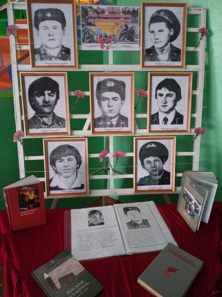

Земляки, павшие в Афганской войне

Пожалуй, на земле никогда не наступит такое время, когда слово «солдат» станет ненужным и незнакомым. Войны на нашей планете не прекращаются с древних времен. А путь войны всегда страшен. Ушла в историю Афганская война. Она продолжалась с 25 декабря 1979 до 15 февраля 1989 года, то есть 2 238 дней. Свой след эта война оставила и в памяти белорусского народа.
Согласно Указу Президента Республики Беларусь от 26 марта 1998 г. №157 «О государственных праздниках, праздничных днях и памятных датах в Республике Беларусь», 15 февраля установлен Днём памяти воинов-интернационалистов, исполнявших служебный долг за пределами Отечества.
С 1979 по 1989 годы в Афганистане проходили службу более 30 тысяч уроженцев Беларуси. Из них 771 человек погиб, 12 числятся без вести пропавшими, более полутора тысяч получили ранения и увечья, 718 стали инвалидами. Война коснулась своим крылом и Хойникский район. Сто двадцать шесть молодых ребят из района служили в Афганистане. В том числе и наши земляки, жители Поселичского сельского совета, призванные служить в Советской Армии в 1980-х годах. Семеро молодых парней, уроженцев Хойникщины, погибли на земле Афганистана, выполняя интернациональный долг. Это огромная боль для родных. Это невосполнимые потери…
Из истории Афганской войны
Афганская война (1979–1989) – один из этапов гражданской войны в Афганистане, ознаменованного присутствием на территории этой страны военного контингента советских войск. В данном конфликте принимали участие вооруженные силы правительства Демократической Республики Афганистан (ДРА) с одной стороны и вооруженная оппозиция (моджахеды, или душманы) – с другой. Борьба велась за полный политический контроль над территорией Афганистана. В военный конфликт оказалась непосредственно втянута и Советская Армия, введенная в страну по решению Политбюро ЦК КПСС для поддержки кабульского правительства. Моджахедам в ходе конфликта поддержку оказывали военные специалисты США, ряда европейских стран – членов НАТО, Китая, а также пакистанские спецслужбы.
Одной из причин войны стало стремление поддержать сторонников концепции социализма в Афганистане, пришедших к власти в результате Апрельской революции, столкнувшихся с мощной оппозицией своей социальной, экономической и политической стратегии. Американская военно-экономическая деятельность в регионе создавала угрозу выхода Афганистана из советской сферы влияния. Также ввод советских войск преследовал цель предотвратить возможное укрепление в регионе исламского фундаментализма, вызванное исламской революцией в Иране 1979. Само по себе падение просоветского правительства означало бы сильный удар по внешнеполитическим позициям СССР, поскольку, случись такое, это был бы первый в послевоенной истории случай низложения просоветского правительства.
Теоретически, помимо прямых последствий, распространение фундаментализма могло через афганских таджиков существенно дестабилизировать советскую Среднюю Азию. На международном уровне было заявлено о том, что СССР руководствуется принципами «пролетарского интернационализма». В качестве формального основания Политбюро ЦК КПСС использовало неоднократные просьбы руководства Афганистана и лично Хафизуллы Амина об оказании стране военной помощи для борьбы с антиправительственными силами.
Введенные в Афганистан советские войска оказались вовлеченными во внутренний военный конфликт на стороне правительства. Они охраняли автомобильные дороги, многие объекты советско-афганского экономического сотрудничества. Охраняли и обеспечивали функционирование аэродромов в крупных городах. Содействовали укреплению органов власти в 21 провинциальном центре. Проводили колонны с военными и народнохозяйственными грузами для своих нужд и в интересах ДРА. Совместно с афганскими частями и подразделениями вели боевые действия различного масштаба по разгрому вооруженных отрядов и групп оппозиции, а также борьбу с караванами, доставлявшими оружие и боеприпасы в ДРА из Пакистана и Ирана.
Вывод советских войск из Афганистана, за которым осуществлялся контроль наблюдателями ООН, был завершен к 15 февраля 1989 года.
Время отдаляет нас от тех событий. Однако, память о войне по-прежнему болью отзывается в сердцах матерей, отцов, вдов, детей тех парней, которые возвращались домой «грузом-200».
Участников Афганской войны в Беларуси объединяет общественное объединение «Белорусский Союз ветеранов войны в Афганистане», созданный 12 марта 1993 года (входит около 13,5 тыс. человек).
Память об Афганской войне хранят мемориальные комплексы и памятники разных регионов страны. Символом памяти о трагической странице истории является мемориальный комплекс «Остров мужества и скорби», открытый в г. Минске в августе 1996 года. Центром мемориального комплекса стал памятник «Сынам Отечества, которые погибли за его пределами». Внутри памятника – четыре алтаря с нанесенными именами погибших белорусов. Среди них две фамилии Героев Советского Союза – рядового пулеметчика Андрея Мельникова из Могилева, героически погибшего при обороне высоты, и командира саперного подразделения старшего сержанта Николая Чепика из Пуховичского района.
В 2015 году в крипту Храма-памятника в честь Всех святых и в память о жертвах спасению Отечества нашего послуживших заложены капсулы с землей, привезенной из пяти провинций Афганистана, в которых воевали воины-интернационалисты из Беларуси. Афганская война завершилась 15 февраля 1989 года. Но она никогда не окончится в семьях, потерявших на той войне близких людей, как не окончится она в сердцах тех, кто был на той войне. 15 февраля – это особый повод высказать уважение ветеранам афганской войны, почтить минутой молчания память тех, кто с нее не вернулся.
Поисково-исследовательская деятельность
В 1989 г. закончилась Афганская война, которая вошла во многие семьи горем, тревогой и переживаниями. Афганская война стала уже историей. Об этой войне известно многое. Подсчитаны безвозвратные потери в живой силе и технике. Невозможно лишь подсчитать сколько пролито материнских, вдовьих и детских слёз, сколько не зарубцевавшихся ран осталось в сердцах людей.
Память – это, наверное, единственное, что помогает человеку думать, сопереживать, не забывать о тех, кто честно служил и был верен присяге, о тех, кто в своем последнем бою не струсил и не смалодушничал, а погиб солдатом, верным своему долгу перед Родиной. Ради сохранения памяти о воинах-интернационалистах учащимися и педагогами Поселичской средней школы проводится поисково- исследовательская и волонтерская работа.
Цель поисково-исследовательской работы в Поселичской средней школе по изучению истории Афганской войны – сбор и систематизация материалов о событиях Афганской войны, о наших земляках, которые выполняли интернациональный долг.
Для достижения поставленной цели решаются следующие задачи:
- Изучаются и анализируются различные источники информации о советско – афганской войне; наших земляках, принимавших в ней участие.
- Собираются материалы о судьбе воинов-интернационалистов.
- На основании собранных материалов оформляется школьная выставочная экспозиция.
- Проводятся тематические мероприятия, патриотические акции.
Одной из форм поисково-исследовательской работы является интервью с людьми, которые сопричастны к теме Афганской войны. Так, в рамках поисковой работы выпускник Поселичской средней школы Амельченко Владислав взял интервью у ветерана боевых действий Александра Людвиговича Гордейчика. Вот что рассказывает Александр Людвигович:
смотреть в отдельном окне
Работа по систематизации и сохранению информации по войне в Афганистане происходит путем создания лепбуков и небольших буклетов по теме.


Перед Днём памяти воинов-интернационалистов, исполнявших служебный долг за пределами Отечества, учащиеся и педагоги школы организовывают тематическую экспозицию.
